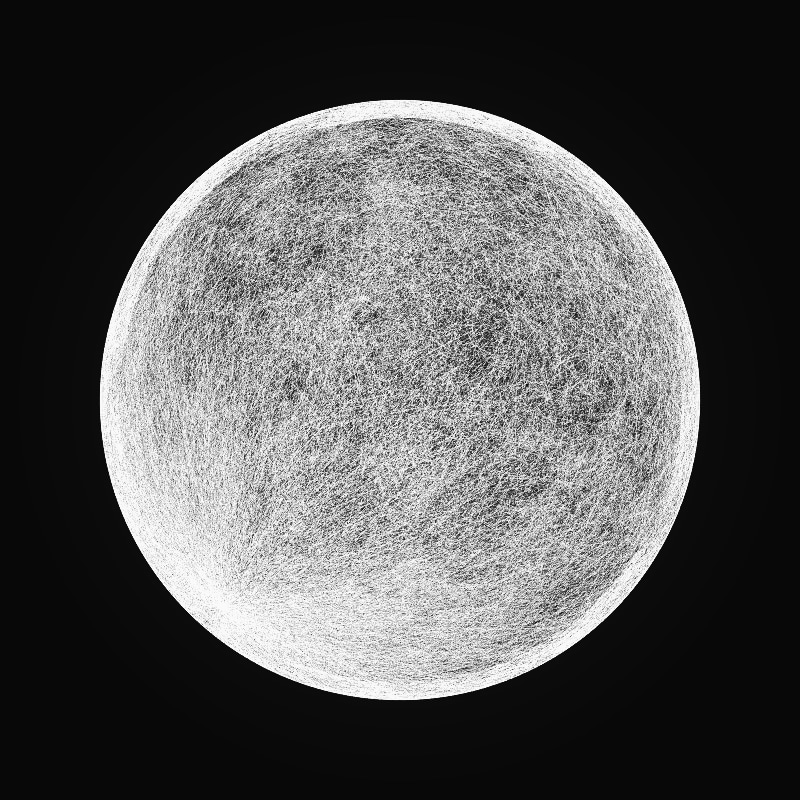
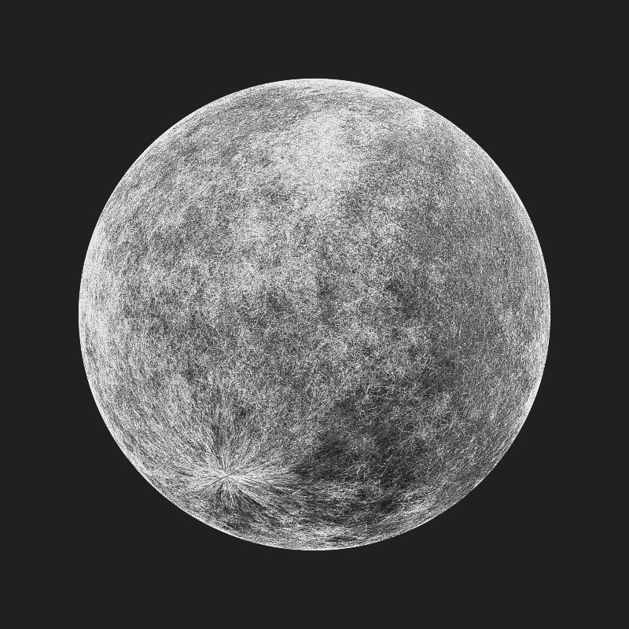
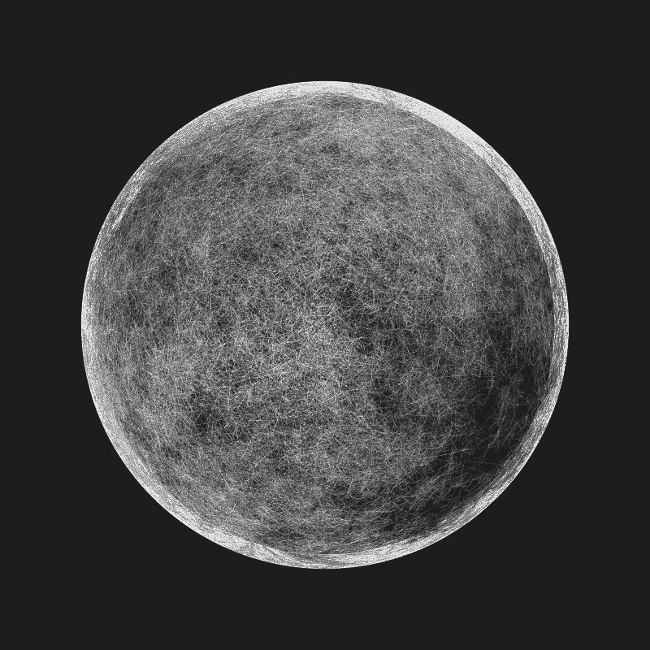

Moons

package prockt.sketches
import processing.core.PShape
import prockt.KApplet
/*
Map random branching shape onto surface of a sphere (iteration 2 - add planet mass)
*/
class Sketch023: KApplet() {
private lateinit var mappedShape: PShape
private var lines = mutableListOf<Line>()
private var terminalLength = 0f
private var randomAngleDiv = 0f
private var reduction = 0f
private var drawPlanetMass = true
private var exportFrame = false
override fun settings() {
size(800, 800, P3D)
smooth(8)
}
override fun setup() {
blendMode(ADD)
generate()
noCursor()
hint(ENABLE_DEPTH_SORT)
}
override fun draw() {
if (exportFrame) {
beginRaw(PDF, "moon_frame_${System.currentTimeMillis()}.pdf");
}
lights()
background(EIGENGRAU)
if(drawPlanetMass) {
noStroke()
fill(BLACK)
sphere(3800f)
}
val fov = PI/3f
val cameraZ = (height/2f) / tan(fov/2f)
perspective(fov, 1f, cameraZ/10f, 14500f)
camera(-width/2f, -height/2f, 10050f, 0f, 0f, 0f, 0.0f, 1.0f, 0.0f)
//rotateY((TAU*frameCount)/3000)
rotateY((TAU*mouseX)/width)
rotateX((TAU*mouseY)/height)
shape(mappedShape)
if (exportFrame) {
endRaw()
exportFrame = false
}
}
override fun mouseClicked() {
generate()
}
override fun keyPressed() {
when (key) {
'e' -> exportFrame = true
'm' -> drawPlanetMass = !drawPlanetMass
}
}
private fun generate(){
lines.clear()
terminalLength = random(0.2f, 1f)
randomAngleDiv = random(2f, 10f)
reduction = random(1.8f, 2f)
val origin = Coord(width/2, height/2)
val dendrites = random(1, 8)
repeat(dendrites){ index ->
val angleRnd = random(-1f, 1f)
var angle = TAU/dendrites * index
angle += TAU/dendrites
grow(origin, 85f, angle + angleRnd)
}
mappedShape = createShape()
mappedShape.beginShape(LINES)
mappedShape.stroke(WHITE, 20f)
mappedShape.strokeWeight(0.5f)
val radius = 4000
repeat(lines.size){index ->
val line = lines[index]
val x1 = radius * (sin(line.y1) * cos(line.x1))
val y1 = radius * (sin(line.y1) * sin(line.x1))
val z1 = radius * cos(line.y1)
val start = Particle(x1, y1, z1)
val x2 = radius * (sin(line.y2) * cos(line.x2))
val y2 = radius * (sin(line.y2) * sin(line.x2))
val z2 = radius * cos(line.y2)
val end = Particle(x2, y2, z2)
if(start.distanceTo(end) < radius/4) {
mappedShape.vertex(x1, y1, z1)
mappedShape.vertex(x2, y2, z2)
}
}
mappedShape.endShape()
}
private fun grow(origin: Coord, length: Float, angle: Float){
when {
length < terminalLength -> return
}
pushMatrix()
translate(origin.x, origin.y)
rotate(angle)
lines.add(Line(screenX(0f, 0f), screenY(0f, 0f), screenX(length, 0f), screenY(length, 0f)))
var offspringAngle = random(0f, 12f)//PI/6 or something for more order
grow(Coord(length / reduction, 0f), length / reduction, -offspringAngle)
grow(Coord(length / reduction, 0f), length / reduction, offspringAngle)
offspringAngle = random(0f, 12f)
grow(Coord(0f, 0f), length / reduction, -offspringAngle)
grow(Coord(length, 0f), length / reduction, -offspringAngle)
popMatrix()
}
}